Heatmap Visualizations of Daily Total Solar Radiation
How Aladdin's 3D heatmaps visualize daily total solar radiation on a model's surfaces to guide solar-panel placement, solar-farm design, and urban solar-access analysis.
Aladdin provides a rich set of visualization tools for analysis. If you have used Aladdin, you probably have used its built-in graphs to display sensor data and energy outputs as a function of time or date. In this article, I will show you another tool — 3D heatmaps. This visualization tool is used to show the spatial distribution of a computed physical property on the surfaces of the elements in an Aladdin model. For instance, the solar radiation heatmap shows the total amount of solar radiation that strikes each unit area of the surfaces over the course of a selected day, unlike shadow that shows only the instantaneous irradiance.
To give you a quick overview, the following video shows the generation of such heatmaps through a numerical simulation of daily solar radiation in Aladdin, with the heliodon turned on to illustrate the position and trajectory of the sun.
The following heatmaps show the daily total solar radiation distribution of a barn house in four seasons.
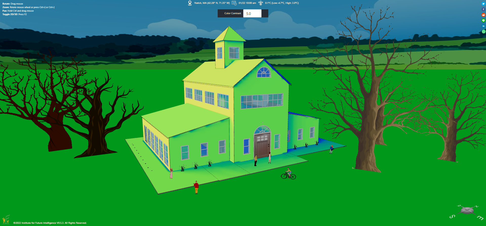
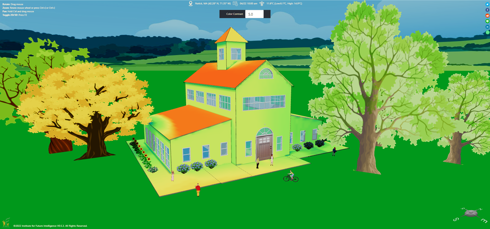
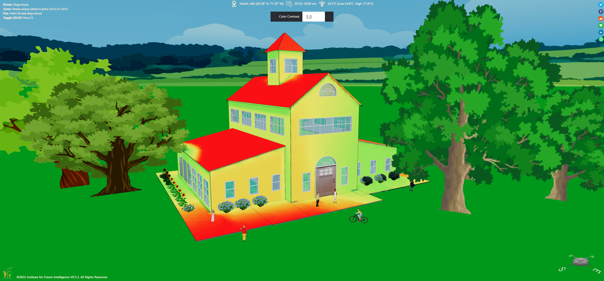
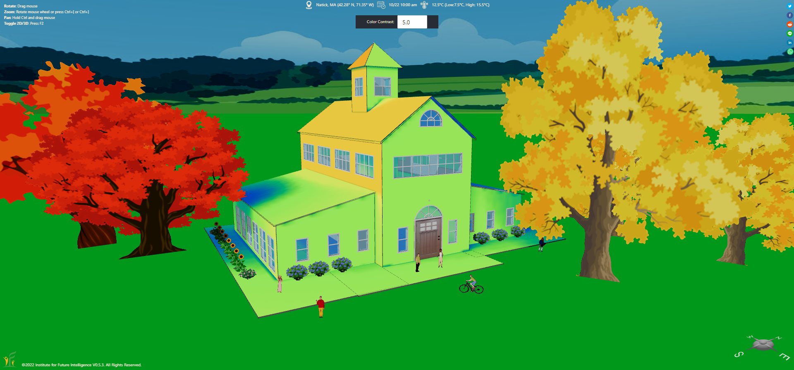
Heatmap representations of daily total solar radiation in four seasons.
In the following sections, we discuss a few applications of heatmap analysis.
Where to install solar panels
Heatmap analysis may be used to identify optimal areas on the roof of a house or on the ground around a house to install solar panels. We provide a live model as follows for you to view and play with the heatmap analysis. The simple challenge of this model is to find a "sweet spot" within the dashed lines on the ground for placing a single solar panel (which has been added to the model). To generate a solar radiation heatmap, use "Analysis > Physics > Daily Solar Radiation Heatmap" under the Main Menu. Note that this simulation may take a few seconds as it is a computationally intensive task.
Solar radiation analysis for solar farm design
In solar engineering, it is important to evaluate if one row of solar panels in an array would cast significant shadow on another that compromises the total output. This usually involves determining the optimal inter-row spacing so that the shadowing loss is minimized throughout the year. The following two images show the results of a solar farm in the real world. The inter-row spacing of this array seems appropriate because, even on December 22 of the year when the sun is lowest in the sky, only a small portion of the solar panels near the bottom of each row is affected.
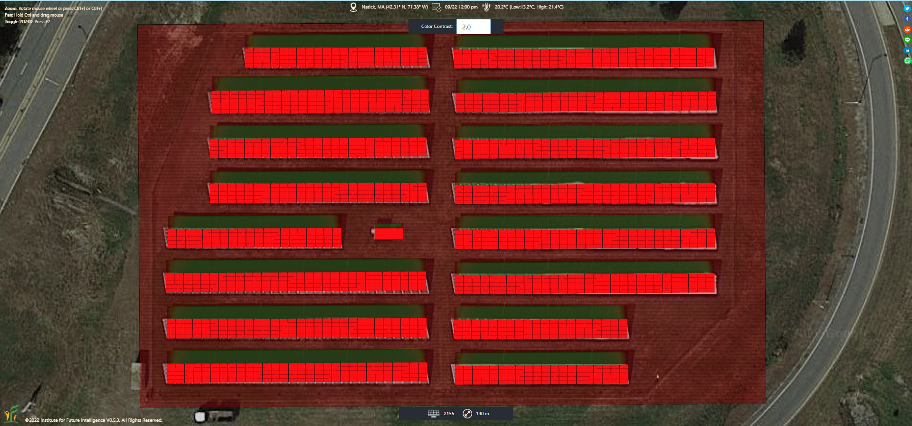
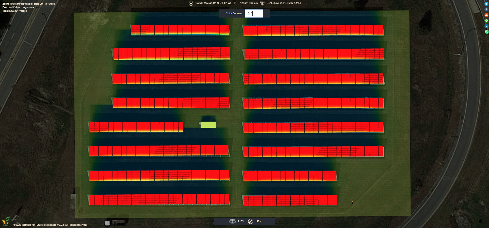
Solar access analysis for buildings
In urban planning, solar access is the ability of a property such as a building or a field to receive sunlight without obstruction from surrounding objects. A solar radiation heatmap allows you to quickly examine the solar access of different surfaces in a cluster of buildings at different times of the year.
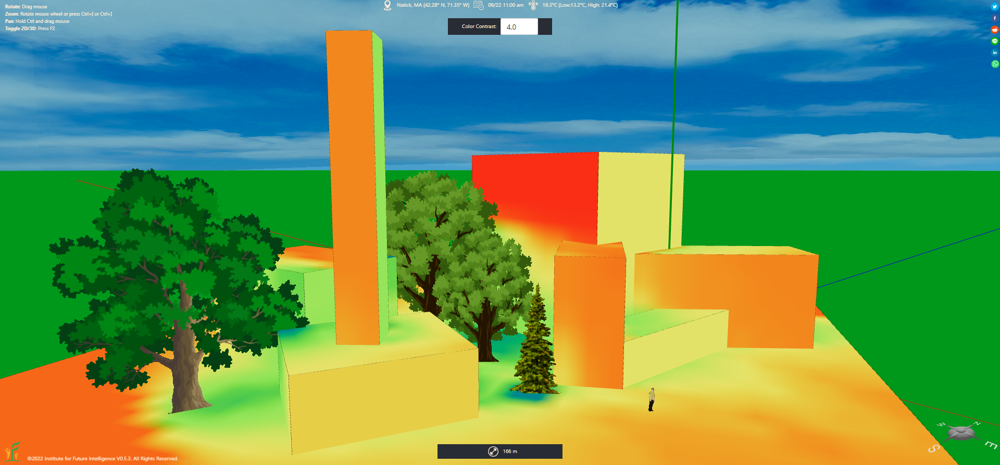
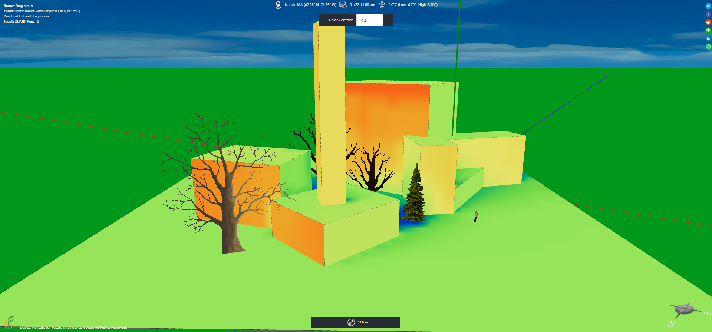
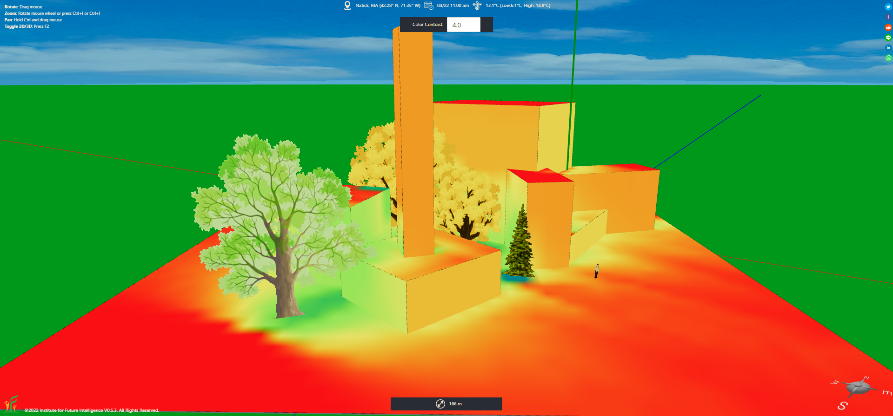
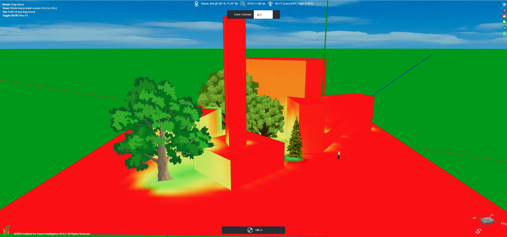
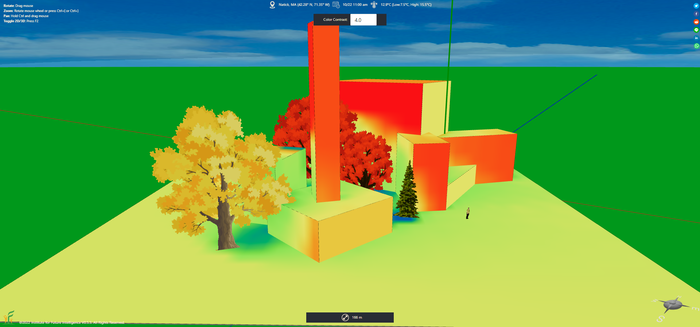
Solar radiation heatmaps for four seasons (clockwise from the top-left one: spring, summer, winter, fall).
The following is an application to a real-world case: The Willis Tower in Chicago.
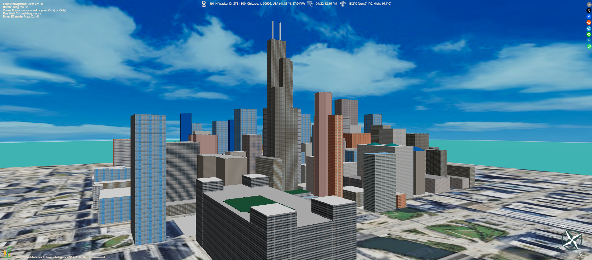
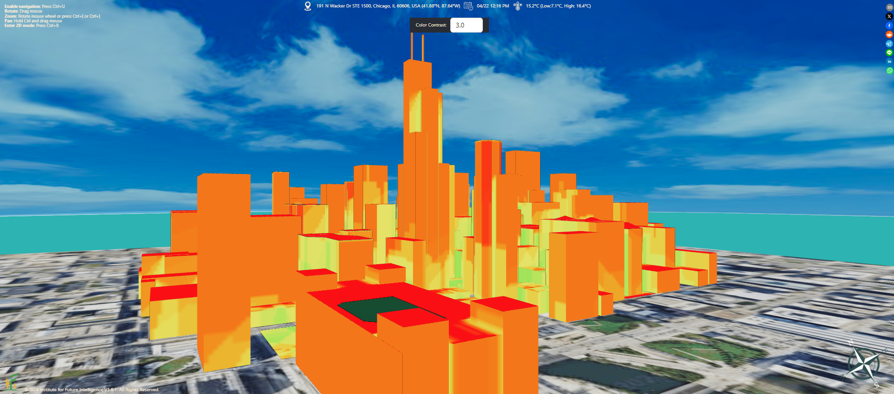
Willis Tower in Chicago.
← Back to Aladdin